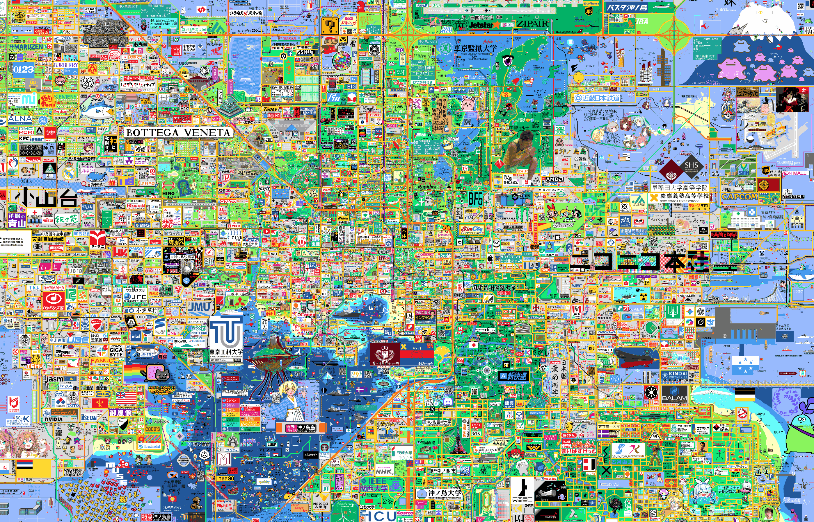

01
Webサイト
企画の入口になるトップページや案内ページ、情報整理のためのサイトを設計し、活動の見え方を整えます。

What We Build
01
企画の入口になるトップページや案内ページ、情報整理のためのサイトを設計し、活動の見え方を整えます。
02
コミュニティの運営や情報共有、作業導線を支えるBotを整備し、創作の流れを止めない仕組みをつくります。
03
制作補助、可視化、データ整理など、創作を前に進めるための支援ツールを開発して、実務を下支えします。
Main Project
沖ノ鳥島開発は、技術局がどのように創作活動を支えるのかを象徴するプロジェクトです。情報の整理、導線の設計、コミュニティ支援、制作補助までを横断しながら、wplace上の表現を前に進めていきます。
プロジェクトを見るSite Map
News Preview
今後ここに更新情報や活動ログを掲載していく想定です。
制作物や取り組みを順次整理して、各ページへ展開できるようにします。
Join / Contact